Current Sponsored Projects
Completed projects link here (2016-2026)- USDA, "Irrigation and Solar Infrastructure to Bolster Freshwater Sustainability" (Water-Energy), 2023-2026 (UTRGV PI).
- DOE, " Research and Education for Energy Related Systems (CA2REERs) "(Energy-Water), 2021-2026 (Co-PI).
- NASA, "Remote-sensing & Analytics for Integrating Science Education (RAISE)" (Water-Soil-Climate), 2023-2026 (Co-PI).
- EPA/NADB, "Stormwater management (water quality) in the US-MX Border" (Water-Soil), 2024-2026 (Co-PI).
- NSF, "Water quality, heat island, and aquatic systems" (Water-Climate), 2026-2030 (UTRGV PI).
- DOE, "Produced Water Operations & Environmental Tech, Oil-Gas-Geothermal" (Water-Energy), 2027-2029 (Co-PI).
Research
- Water Resource Research and Development (Water Availability, Water Supply, Water Quality)
- Multiphase Flow and Contaminant Transport in Porous Media and the Environment
- Non-Destructive Testing (NDT) Applications in Engineered and Natural Porous Media
- Geo-/Hydro-Informatics (Numerical Modeling and GIS)
- Groundwater Monitoring and Remediation
- GeoEnergy Resource (oil/gas and geothermal)
Current & Recent Projects
- Water Availability and Hydrogeologic Characterization: Geospatial Analysis & Numerical Modeling
- Engineered Porous Media for Groundwater and Stormwater Contaminant Remediation
- Waste Management (e.g., Superfund Site, Point/Nonpoint Source releases, Geologic Carbon Sequestration)
- NDT-Imaging Multiphase Flow and Transport in Porous Media
- Soil Hydrology (Vadose Zone) and Ecohydrology (Water-Energy-Food)
- Energy Development (Enhanced Oil Recovery, Hydraulic Fracturing, Geothermal)
- BC-vG Upscaler | download here
- DOE, "Greenhouse gas flux response under simulated soil hydrologic dynamics" (Soil-Water-Climate), 2022-2025 (Co-PI).
- NSF, " GP-IN: Families & University Together as a Unit for Research & Education (FUTURE)", 2021-2025 (PI).
- USDA, "Pathways to NRCS & Academic Careers to Civil Engr. & Agriculture Students (PANACEAS)", 2022-2027 (Co-PI).
- NSF, " Coll. Research: Promoting Research-based Instructional Methods for STEM Education", 2018-2025 (PI).
- USDA, " Training, Research, and Education in Soil Science (TRESS)", 2018-2022 (Co-PI).
- NSF, " GP-EXTRA: Stimulating Hispanic Participation in the Geosciences (SHIP-GEO)", 2016-2019 (PI).
- DOE, "South Texas Industrial Assessment Center (energy, water & waste management)", 2016-2021 (Co-PI).
- DoN-IU, "Modeling & Risk Assessment for Texas-Mexico Borderland Colonias", 2018-2019 (PI).
- Chevron-DoS, "Energy and Water Resource Management", Argentina-Americas 100K Strong, 2018-2019 (Co-PI).
- NSF, "MRI:Acquisition of a Spark Plasma Sintering System for Functional Ceramics", 2018-2021 (Co-PI).
- DoD-HBCU/MI, "Acquisition EPR for Interdisciplinary Research and Education in Advanced Materials", 2019-2020 (Co-PI).
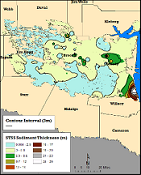
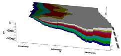
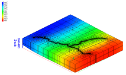
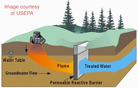
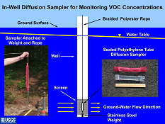
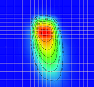
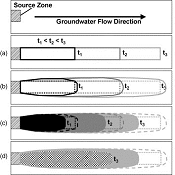
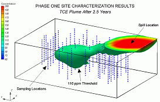
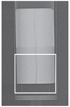
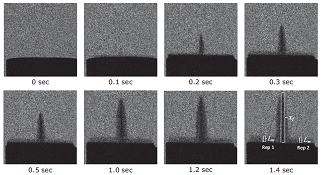
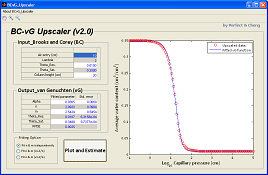
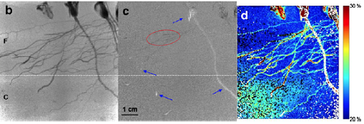